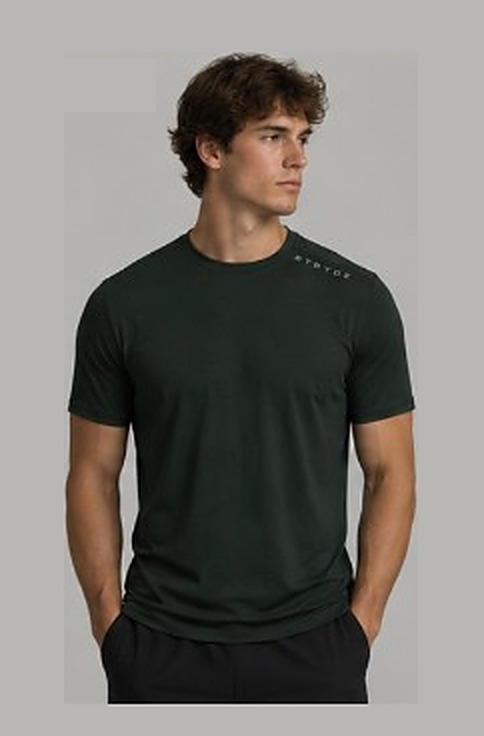

01
Lyocell
Wood pulp, spun in a closed loop. The solvent used to make the fiber is recovered and reused. It breathes, which is what a training shirt needs from the cloth itself.
Est. 2026 · Two friends
STRYDE is a performance tee in lyocell and organic cotton. Cut for the work and the hours after it. Small runs, plant fiber, color used carefully.

Performance Tee
Same cloth in every one. Pick a color, then turn the grid to see the back.
Materials
A performance knit that starts as wood and cotton. The shirt is cut to be sweated in, washed cold, and kept.
01
Wood pulp, spun in a closed loop. The solvent used to make the fiber is recovered and reused. It breathes, which is what a training shirt needs from the cloth itself.
02
Grown without synthetic pesticides. Blended with the lyocell, it gives the knit enough body to hold its shape after repeated sessions.
03
Four colors, applied with a low-water process. Short runs mean less leftover dyed cloth waiting in a warehouse.
The company
STRYDE started because the performance clothes we could buy were built to be replaced. We wanted a shirt we could train in that was still made from something honest.
The name is the step. The work is the cloth: fewer pieces, better fiber, runs small enough that we can stand behind them.
The mark is a leaf, leaning forward. Plant fiber, and the stride the clothes are cut for. That is the whole idea.

Drop 01
Leave an email and the color you are holding. We write once, when the Performance Tee is ready to order.